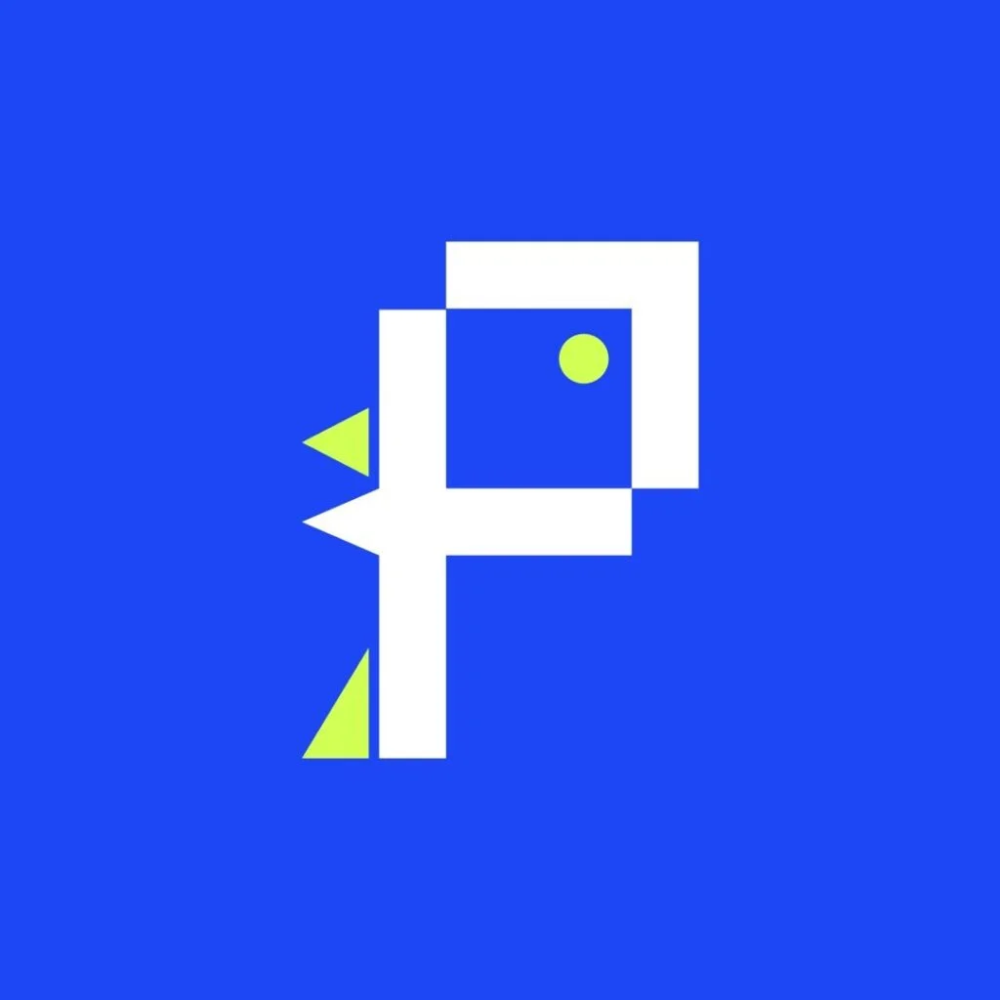

Animation and Visual Design Specialization
The Animation and Visual Design Specialization in Media Production at Universitas Indonesia focuses on developing creative and technical skills in creating animation, motion graphics, and visual communication design. Students in this specialization study various aspects such as visual design, the use of design software, character animation, illustration, and more.

PIXEL PALS
Pixel Pals is the name of a studio/specialization within the Animation and Visual Design concentration. In the Pixel Pals studio, students combine elements of visual art and technology to create effective and engaging communication works. By utilizing technology and aesthetic principles, students are trained to produce various visual media in ways that are innovative, creative, and relevant to the needs of today's audience.
Core Stream(s): Designer, Artist